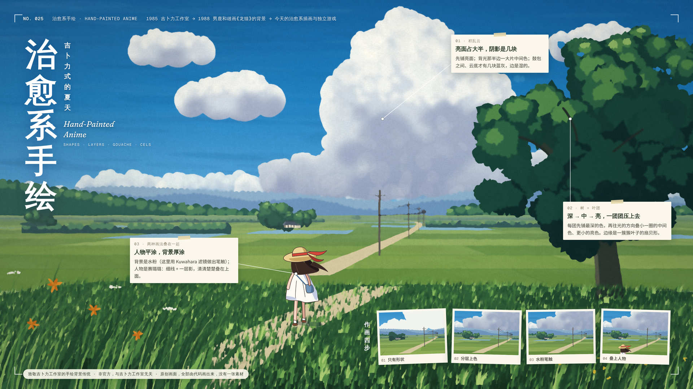
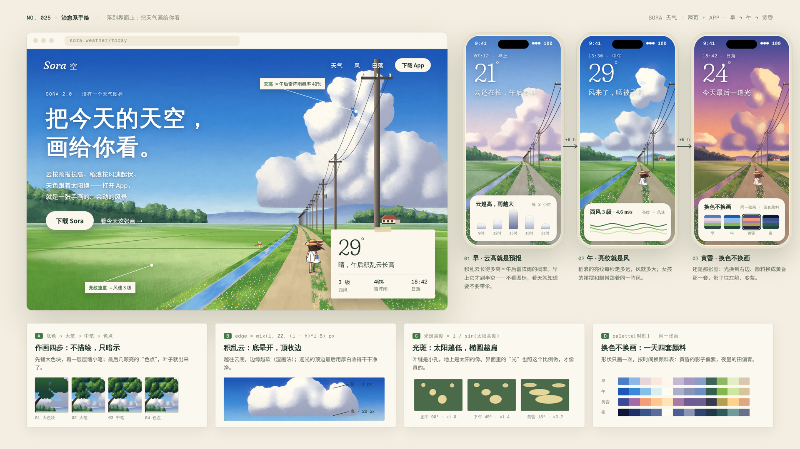
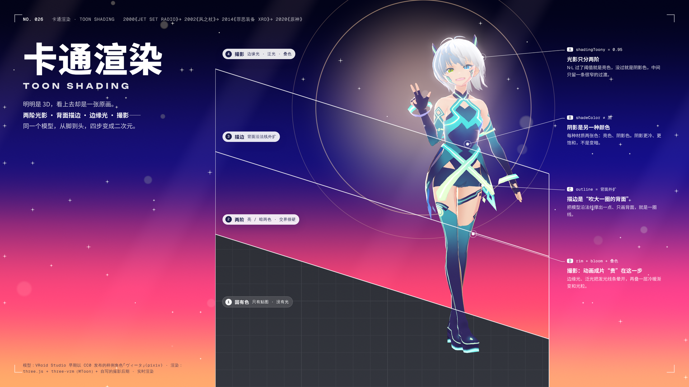
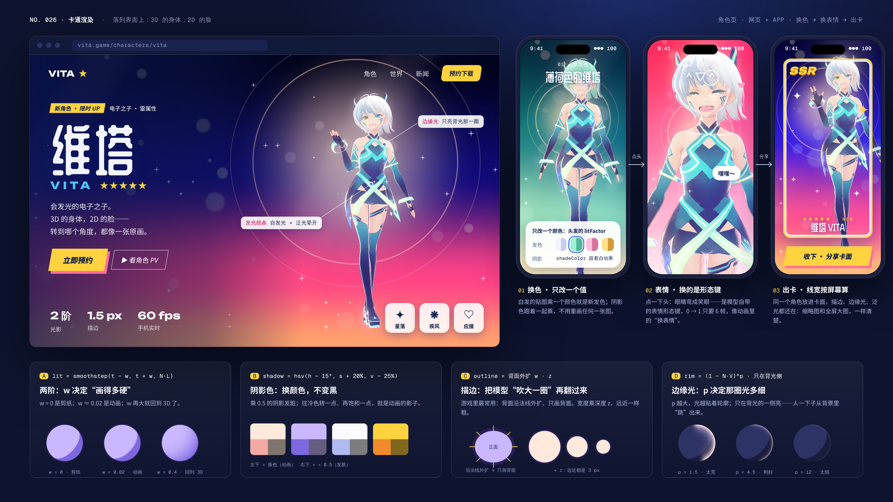
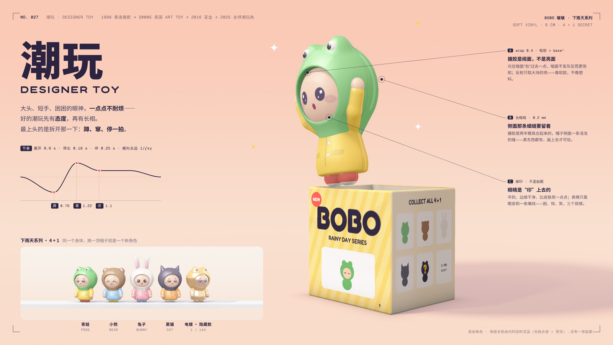
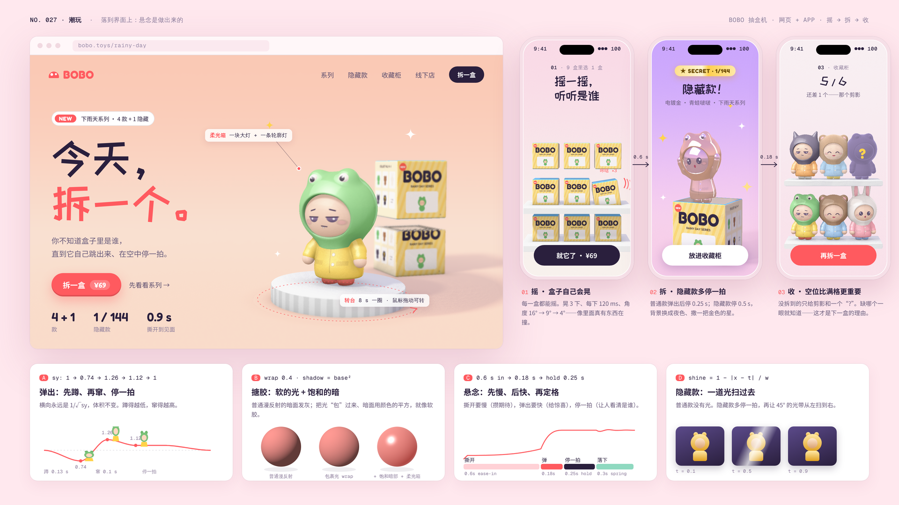

治愈系手绘Hand-Painted Anime
1985 吉卜力工作室 → 1988 男鹿和雄画《龙猫》的背景 → 今天的治愈系插画与独立游戏
对着《龙猫》剧照学：先设计形状、平涂，再过一遍水粉笔触；人物赛璐璐叠在上面。

第 0 帧 · 乡下的夏天：积乱云（亮面占大半、几块湿边蓝灰）、稻田、农家、电线杆、一团团硬边叶簇的大树；Kuwahara 滤镜把平涂变成水粉笔触，草帽女孩单独一层、线条清楚。右下是同一块画面的作画四步：形状 → 分层 → 水粉 → 人物。

界面 · Sora 天气：没有一个天气图标——积乱云的高度 = 雷阵雨概率，稻浪亮纹 = 风速，同一张画早 / 午 / 黄昏换三套颜料。配方：作画四步、叶团三层、Kuwahara 笔触、换色不换画。
卡通渲染Toon Shading
2000《Jet Set Radio》→ 2002《风之杖》→ 2014《罪恶装备 Xrd》→ 2020《原神》
真模型 + 真管线：MToon 两阶光影、背面描边，再加一层“撮影”。

第 0 帧 · VRoid 的 CC0 样例角色「ヴィータ」比剪刀手，从脚到头切成四步：固有色 → 两阶光影 → 描边 → 撮影（边缘光、泛光把发光线条晕开、冷暖渐变、光粒）。three.js + three-vrm 实时渲染。

界面 · 游戏角色页 + App：头发乘一个颜色就是新发色；点头触发模型自带的笑眼表情；放进 SSR 卡面，描边和泛光都在。配方：两阶的 w、阴影换色不变黑、背面外扩描边、边缘光的 p。
潮玩Designer Toy
1999 香港搪胶 Gardener → 2000s 美国 Art Toy → 2016 盲盒 → 2025 全球潮玩热
先有态度，再有长相：困困的眼神 + 一点点不耐烦，拆开那一下最上头。

第 0 帧 · 原创 IP“啵啵 BOBO”（穿动物帽雨衣的小孩）从盲盒里窜出来，产品摄影级渲染：缎面搪胶、合模线、移印五官、景深。左边是拆开的节奏曲线，下面是换帽子成系列：青蛙 / 熊 / 兔 / 猫 + 电镀隐藏款。

界面 · BOBO 抽盒机：摇一摇（盒子自己会晃）→ 拆（隐藏款多停一拍、背景换夜色）→ 收藏柜（没拆到的只给剪影和“?”）。配方：体积不变的挤压拉伸、搪胶 = 包裹光 + 饱和暗部、悬念节奏、隐藏款扫光。